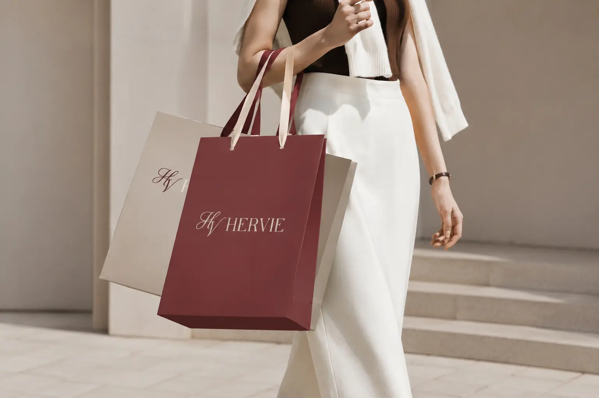
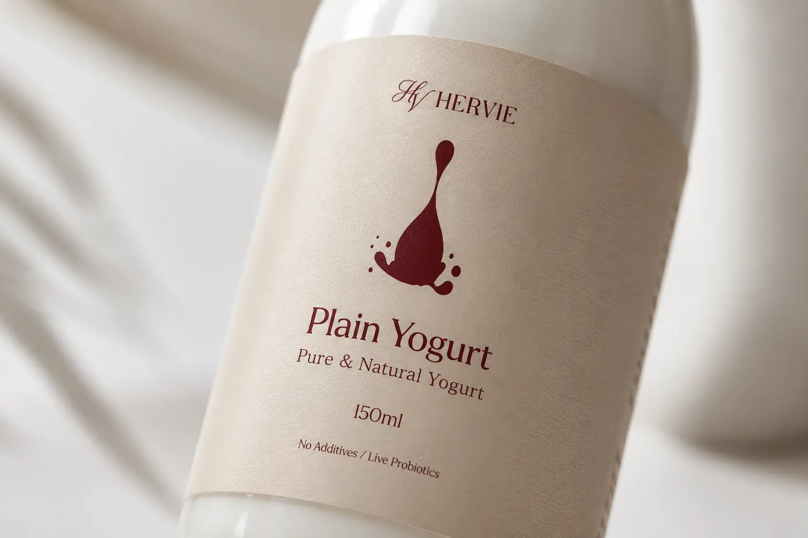
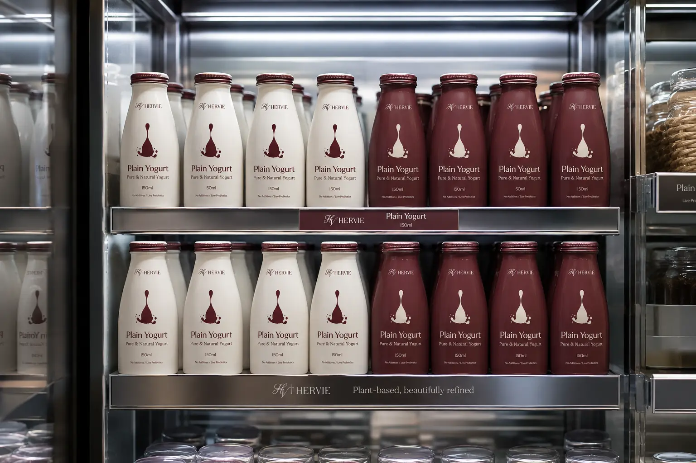
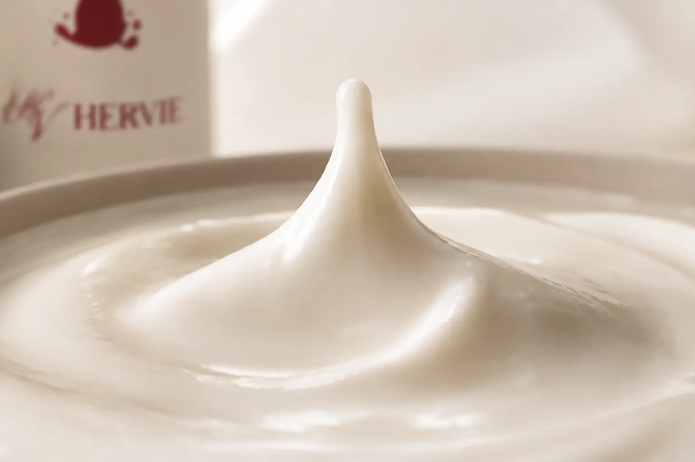
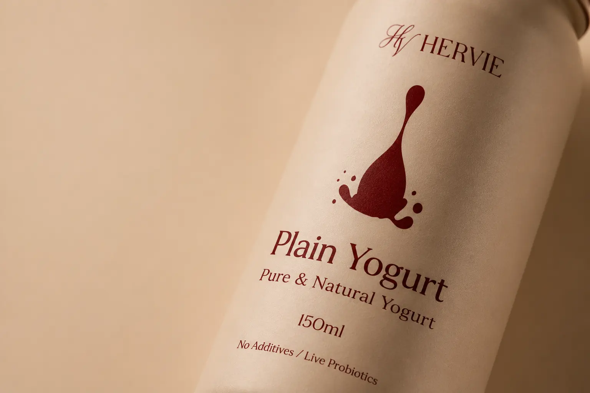
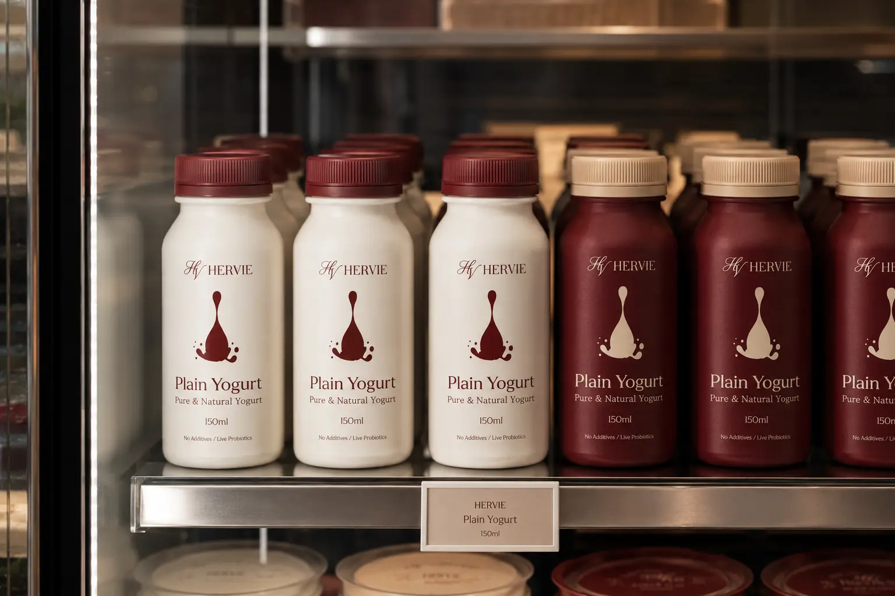
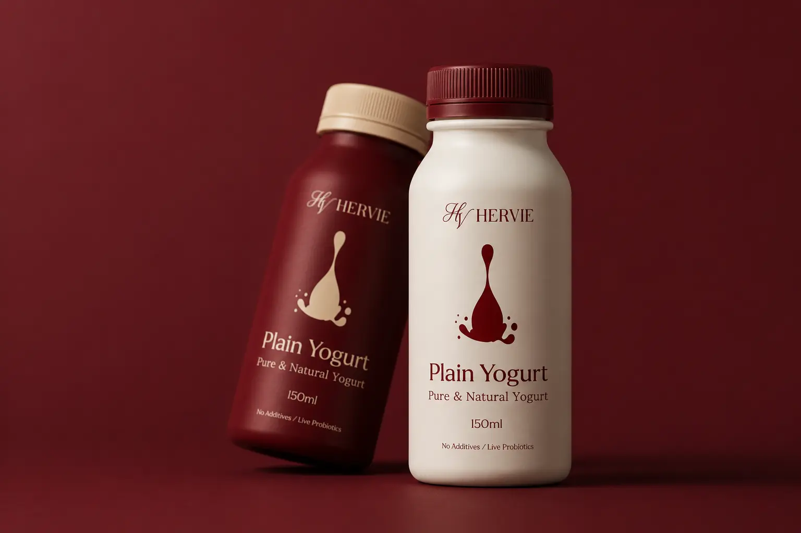
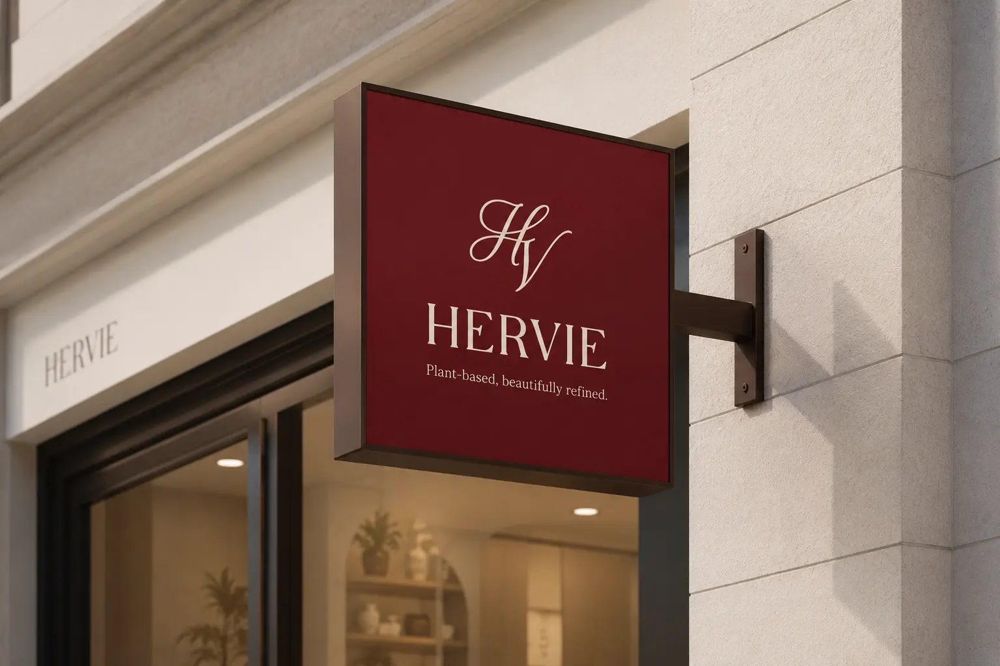
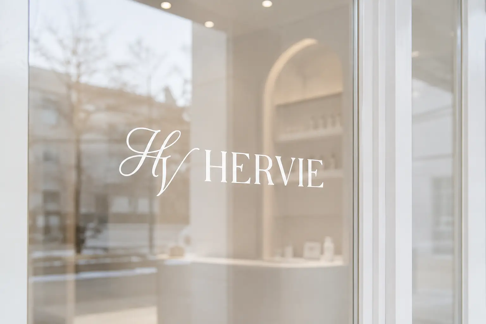

HERVIE의 목표는 식물성 요거트를 단순한 건강식이 아닌 취향과 가치가 담긴 라이프스타일 제품으로 확장하는 것이다. 소비자가 제품을 선택하는 과정에서 맛, 건강, 디자인, 브랜드 감성을 함께 경험할 수 있도록 하는 데 중점을 둔다. 패키지, 웹사이트, 명함 등 다양한 접점에서 통일된 시각 언어를 구축해 브랜드의 전문성과 신뢰도를 높인다. 또한 식물성 식품에 대한 진입 장벽을 낮추고, 누구나 자연스럽게 선택할 수 있는 세련된 브랜드 이미지를 형성한다. 최종적으로는 HERVIE가 식물성 요거트 시장 안에서 프리미엄하고 감각적인 브랜드로 자리 잡는 것을 목표로 한다.
Portfolio / Brand Identity
HERVIE
HERVIE는 식물성 삶을 세련되고 감각적으로 제안하는 플랜트 베이스 요거트 브랜드이다. 건강한 대체식품이라는 기능적 가치에 머무르지 않고, 순수한 맛과 정제된 라이프스타일을 함께 전달하는 브랜드로 설계되었다. 브랜드 전반에는 자연성, 프리미엄 이미지, 부드러운 감성이 균형 있게 반영되어 있다. 식물성 원료가 가진 깨끗한 인상과 고급 식품 브랜드가 가져야 할 신뢰감을 동시에 보여준다. 이를 통해 HERVIE는 일상 속에서 가볍게 즐길 수 있지만, 감도 있는 선택으로 인식되는 브랜드를 지향한다.
- Scope
- Brand Identity / F&B
- Studio
- BDLab
- Year
- 2026

HERVIE는 식물성 식품을 의무적인 건강 관리가 아닌, 맛과 취향을 함께 만족시키는 감도 높은 일상의 선택으로 제안한다. 자연 원료의 순수함과 요거트의 부드러운 감각을 정제된 브랜드 언어로 전달하며, 가볍게 즐기면서도 분명한 가치가 느껴지는 플랜트 베이스 라이프스타일을 이야기한다.
HERVIE의 디자인은 클래식한 세리프 로고타입과 유려한 스크립트형 심볼을 결합해 우아하고 정제된 인상을 전달한다. 요거트가 가진 부드러운 흐름과 식물성 브랜드의 자연스러운 이미지를 심볼, 패키지 그래픽, 레이아웃 전반에 반영했다. 전체 구성은 넓은 여백과 안정적인 그리드 시스템을 기반으로 제작되어 시각적으로 차분하고 고급스러운 분위기를 만든다. 강한 장식 요소를 과하게 사용하기보다 절제된 타이포그래피와 컬러 대비를 통해 브랜드의 품격을 표현한다. 이러한 디자인 방향은 HERVIE가 가진 순수함, 부드러움, 프리미엄 이미지를 일관되게 보여주는 역할을 한다.







